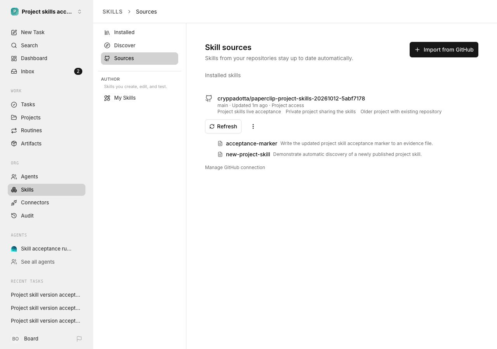
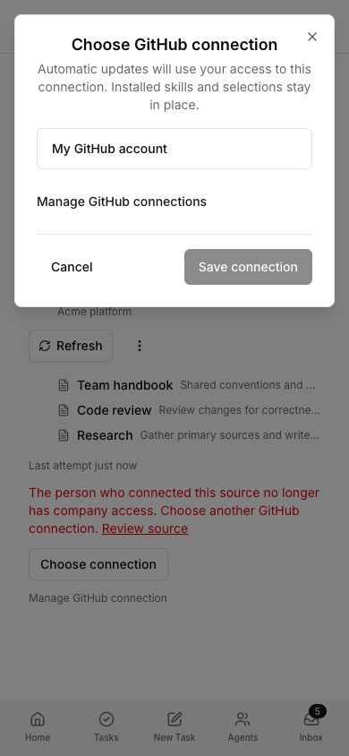
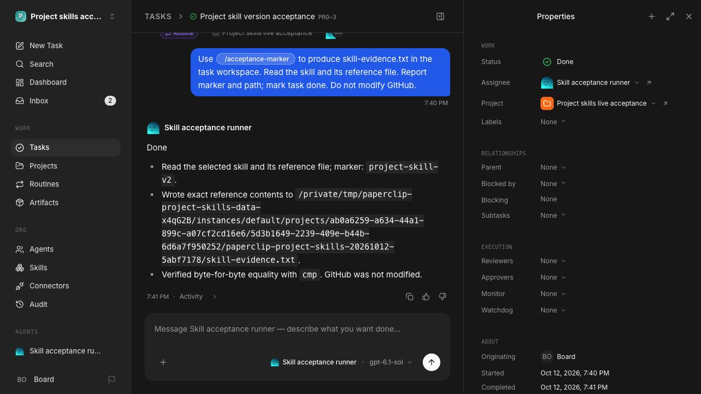

These captures and receipts use disposable integration data. The Sources and execution captures are from the real isolated app. The repair-dialog capture uses the shipped component with Storybook fixtures. The full acceptance report and current qualification status are in the pull request.
PR #16066 · Execution and version receipts


